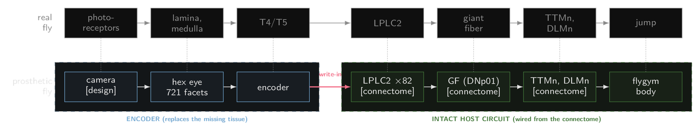
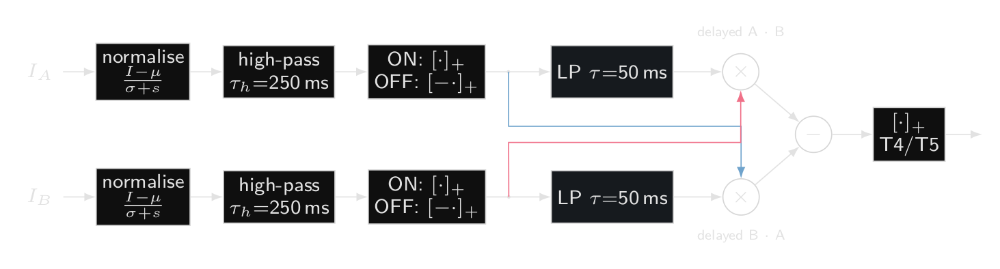
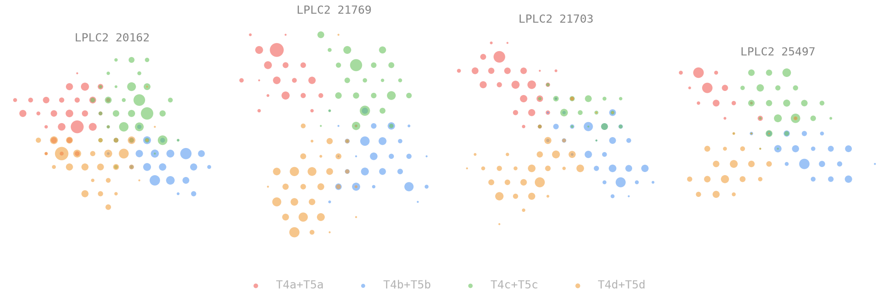
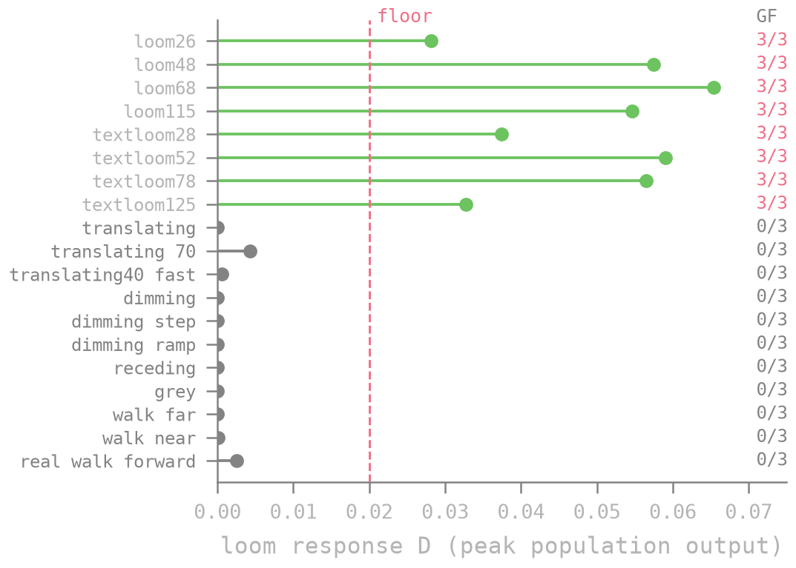
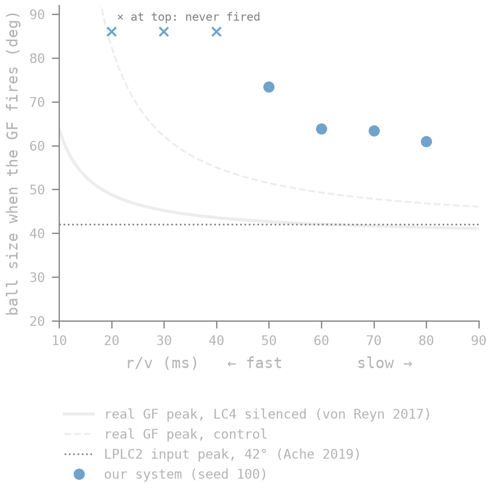
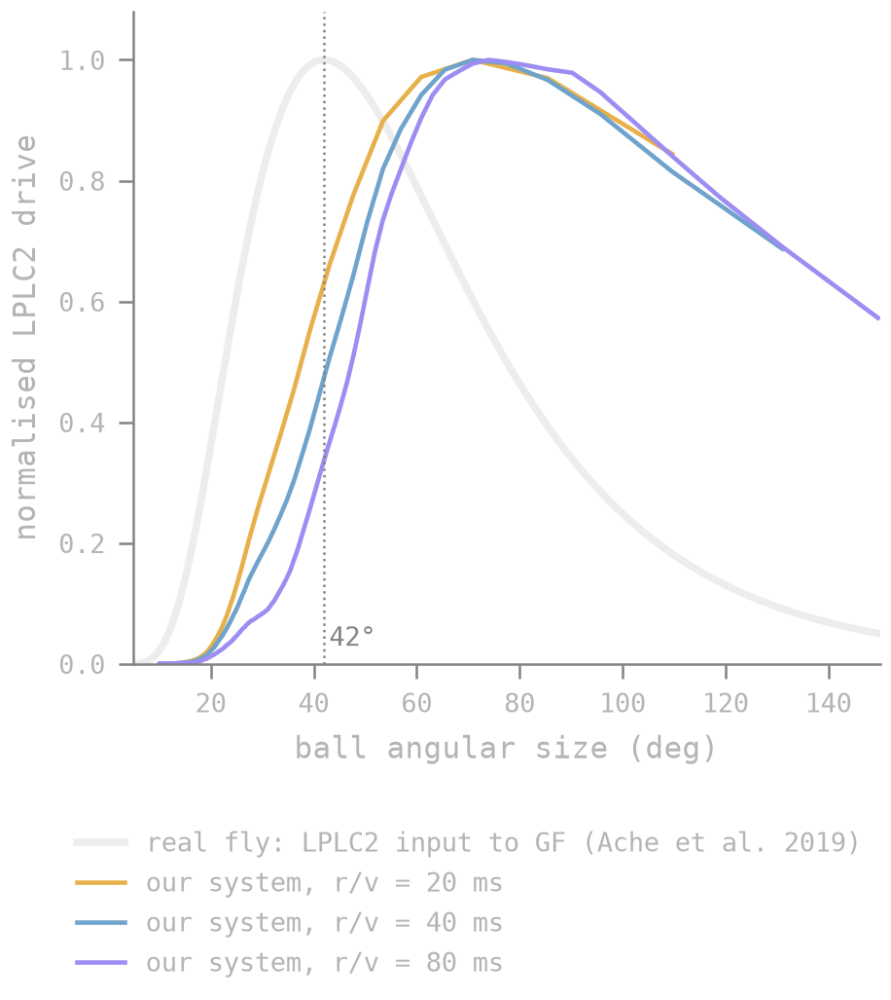

Neural Prostheses
Recently, Google Research, HHMI Janelia and other collaborators in Cambridge, U.K. released the male CNS connectome of Drosophila melanogaster (Fruit Fly). While people have built “impressive” looking demos, we at Shunya have been looking into connectomics for a good part of this year. We’re currently working on various prototypes of applications using connectomics that could one day be useful in medicine and neuroscience. However, all big things come from small beginnings. In this blogpost, we describe a proof-of-concept of how connectomics can aid in constructing neural prostheses.
Experiment setting:
Consider a sighted fly. The vision pipeline works somewhat like the illustration shown below:
Now suppose the early part of this pathway, from the photoreceptors up to the T4/T5 motion cells, is missing, for example because of disease or damaged eyes. The rest of the circuit, from the LPLC2 cells onward, is intact.
A neural prosthesis restores function by feeding signals into the intact part of the circuit. Nirenberg and Pandarinath (2012) built a retinal prosthesis with two parts:
- Encoder: a model, fitted to recordings, that converts images into spike patterns like those of a normal retinal ganglion cell.
- Transducer: channelrhodopsin-2 (ChR2), a light-sensitive protein expressed in ganglion cells, driven by light, so the encoder's output can be written into the cells.
In blind mice, this setup produced firing patterns close to those of a normal retina.
The fruit fly connectome gives us the exact wiring of the intact circuit, so we use the same idea to simulate one of the simplest behaviors a fly's vision drives: the looming escape, where the fly jumps away from an approaching object.
Everything is simulated and the flybody is borrowed from (Wang-Chen et al., 2024). Our encoder is a camera plus a hand-built motion detector that writes straight into the LPLC2 cells (a real implant would need a transducer for this step).
Why the fly escapes
When something looms at a fruit fly, it jumps and the circuit behind that decision is well understood. Only a few dozen neurons sit between the eye's motion detectors and the jump muscle. The behaviour has a single, measurable output whose timing has been recorded in real flies (von Reyn et al., 2014, 2017; Ache et al., 2019). Its looming detectors, a cell type called LPLC2, have a known computational structure (Klapoetke et al., 2017). And switching on LPLC2 alone makes real flies jump (Wu et al., 2016), which makes it a realistic place for a prosthesis to write its signal in.
The new architecture looks like this:
The entire pipeline is illustrated below:

Building the prosthesis:
In a sighted fly, light passes from the photoreceptors through the layers of the optic lobe to the T4 and T5 cells which detect motion. They feed the LPLC2 cells which then converge on the fly's escape command neuron (the giant fiber). A single giant fiber spike is enough to fire the jump.
Our prosthesis replaces the first half of the above mentioned pathway. A camera image is resampled onto a model of the fly's compound eye with 721 facets that are updated at 200 Hz. An encoder then computes the motion signals T4 and T5 would have sent. It is a classic correlator, which compares each facet's recent past with its neighbour's present, plus a contrast normaliser so it responds to edges rather than total brightness. It is a hand-built stand-in for what those cells compute and not a biophysical model of them.
The encoder is rather simple, for each pair of neighbouring facets the encoder has a leaky memory of what the first one saw over the last ~50 ms and multiplies it by what the second one sees now, if an edge passed the first facet a moment ago and is at the second one now, the product tends to be large and when you subtract the same product in the opposite direction you’re left with values that fire only for motion in one direction, this leads downstream into the 4 sub-populations of the T4 and T5 cell groups that correspond to the 4 directions.

Everything after the encoder comes from the male central nervous system connectome (Janelia, Google Research, MRC LMB and Cambridge). We took all 82 right-side LPLC2 cells that view our model eye, every synapse they receive from T4 and T5, their inhibitory partner cells, the ~2000 synapses that lead into the giant fiber and the giant fiber's connections to the jump and flight motor neurons. The giant fiber and motor neurons are LIF neurons that follow a published whole-brain fly model (Shiu et al., 2024), the LPLC2 cells are simpler graded units and the body is NeuroMechFly as mentioned above (Wang-Chen et al., 2024), a physics simulation of a fruit fly.
Each LPLC2 cell gets motion inputs arranged in a cross, with each arm tuned to motion outward from the cell's centre. An object growing in front of the fly drives all four arms at once; something sliding past drives at most one. Across cells the arms are super consistent, 81% of cells show all four.

Tests:
To test if our model works by defining what a pass criteria is, we tested the setup on novel stimuli that we hadn’t used while building or tuning the model. Every looming object ended up firing the giant fiber. However, sideways motion, dimming, receding objects, a blank scene and the view while walking forward never did.
The last one is an important test since walking forward makes the whole visual field expand, which looks a lot like looming, however our model rejects it on its own because whole-field expansion drives LPLC2 three to five times less than a local loom, hence validating our pipeline by mirroring real fly behaviour.

Results:
Downstream, the timing matches biology. A giant fiber spike fires the jump motor neuron 0.2 ms later and the simulated body leaves the ground 5 ms after that which matches literature (Zumstein et al., 2004).
To further push the limits of our setup we run it in realtime on a laptop, with a webcam as a stand-in for the eye. In a dark room lit by a single lamp, an arm moving towards the camera reliably makes the simulated fly jump.
Limitations:
Late escape is a major limitation of our setup. A real fly's looming detectors respond most strongly when an approaching object fills about 42° of its view. Ours first fire the giant fiber when the object is 61–73° wide and for approaches faster than about 20 mm/s they don't fire it at all. Real flies escape across the whole range of speeds.
To investigate where time is lost we trace the signal through time and find that the connectome wiring is not the problem, the inhibitory cells and the connections between LPLC2 cells barely matter before the giant fiber fires. The delay stems from how the encoder was engineered; it doesn’t respond to small objects leading to the first LPLC2 cell to fire once the object is ~48° wide regardless of speed. Another suspect is an input to the giant fiber that we didn’t model, the LPLC2 provides about 14% of the giant fiber’s input; another looming pathway, the LC4 provides 16% and carries the speed signal that real flies rely on for fast approaches.
Our giant fiber also fires in bursts, usually two or three spikes where a real fly's fires one. It has no inhibition acting on it, so nothing stops it firing again while LPLC2 keeps driving it. In the real fly, most of the giant fiber's inhibitory inputs are driven by parts of the brain we didn't consider. When we added the few that LPLC2 does drive, they barely fired.


Observations:
A few observations and lessons from our experiments:
- Connectomes could potentially open up ways to design and test neural prosthesis before actual testing.
- There are many factors to consider when simulating a neural circuit, e.g. our decision to leave out LC4 made the fly response time towards fast objects slower.
- Components of the connectome out of the considered neural circuits impact the behaviour of said circuits as seen in the LPLC2 case.
- Sensors that model biological sensory organs are important. Mapped at its true ~50° view, the webcam covered only 59 of the eye's 721 facets and the fly never escaped. A prosthesis is limited by its camera's field of view and frame rate before the neurons get involved.
- Complexity of neuron modelling has downstream behaviour. Treating the giant fiber as a single point neuron rather than a branched cell is one reason it fires in bursts and reacts to too little input. Simplifications that look harmless show up in the behaviour.
- Verifying the outputs of such systems will need actual behavioural data. Our system works as intended however is slower than the response system of a real fly.
What next:
The obvious next step is LC4, the missing looming pathway into the giant fiber, which should fix the fast approaches. Beyond that, we want to make the looming detectors spike, so their only free number is replaced by synapse counts and to pair them with an event camera. Its on/off events map naturally onto T4 and T5, which would give a fully spiking prosthesis from camera to jump. Further out, synapse-level connectomes now exist for about a cubic millimetre of mouse and human cortex (MICrONS Consortium, 2025; Shapson-Coe et al., 2024).
References
- Ache, J. M. et al. (2019). Neural basis for looming size and velocity encoding in the Drosophila giant fiber escape pathway. Current Biology 29, 1073–1081.
- Janelia FlyEM, Google Research, MRC LMB and University of Cambridge (2026). Sexual dimorphism in the complete connectome of the Drosophila male central nervous system. Cell. doi:10.1016/j.cell.2026.08.015; data at male-cns.janelia.org.
- Klapoetke, N. C. et al. (2017). Ultra-selective looming detection from radial motion opponency. Nature 551, 237–241.
- MICrONS Consortium (2025). Functional connectomics spanning multiple areas of mouse visual cortex. Nature 640, 435–447.
- Nirenberg, S. and Pandarinath, C. (2012). Retinal prosthetic strategy with the capacity to restore normal vision. PNAS 109, 15012–15017.
- Shapson-Coe, A. et al. (2024). A petavoxel fragment of human cerebral cortex reconstructed at nanoscale resolution. Science 384, eadk4858.
- Shiu, P. K. et al. (2024). A Drosophila computational brain model reveals sensorimotor processing. Nature 634, 210–219.
- von Reyn, C. R. et al. (2014). A spike-timing mechanism for action selection. Nature Neuroscience 17, 962–970.
- von Reyn, C. R. et al. (2017). Feature integration drives probabilistic behavior in the Drosophila escape response. Neuron 94, 1190–1204.
- Wang-Chen, S. et al. (2024). NeuroMechFly v2: simulating embodied sensorimotor control in adult Drosophila. Nature Methods 21, 2353–2362.
- Wu, M. et al. (2016). Visual projection neurons in the Drosophila lobula link feature detection to distinct behavioral programs. eLife 5, e21022.
- Zumstein, N. et al. (2004). Distance and force production during jumping in wild-type and mutant Drosophila melanogaster. Journal of Experimental Biology 207, 3515–3522.
Shunya Research © 2026